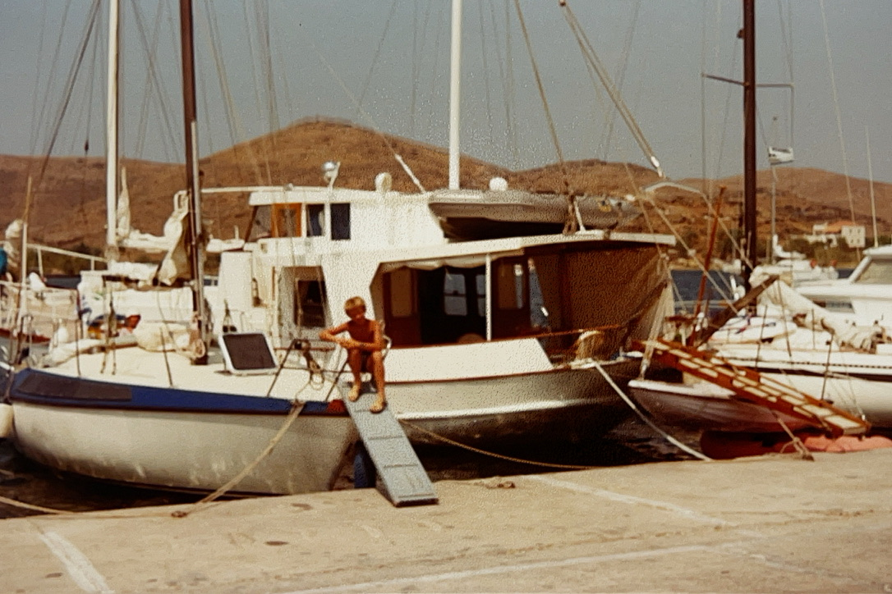
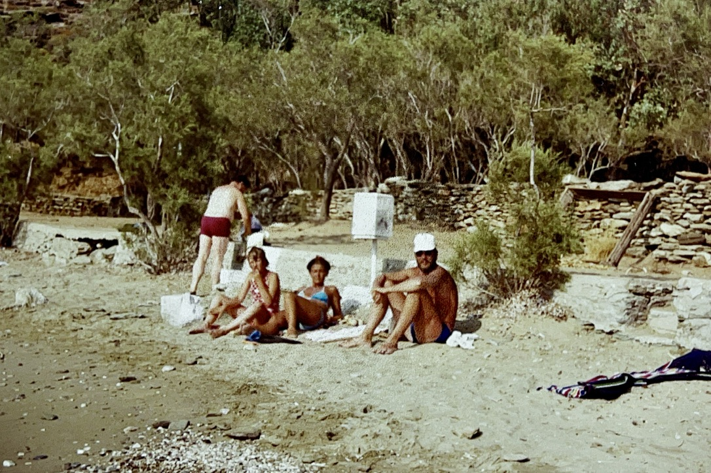
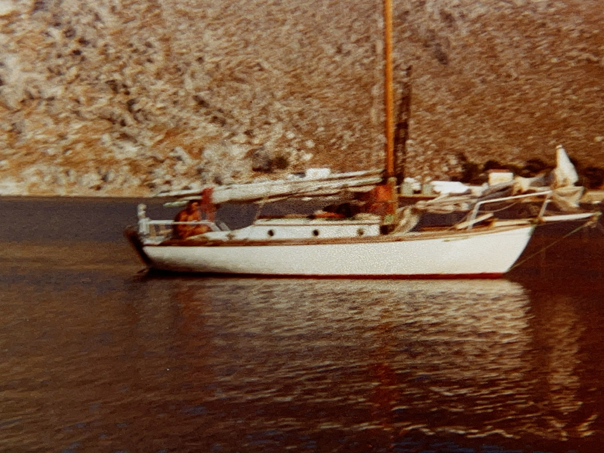

How this is different.
My father travelled in Greece as a young man in the 1960s and made friends there. They stayed friends for life. That's why my family kept coming back — we always had someone to visit. In 1993 I was on one of those trips: we visited one of my father's old friends in the Peloponnese, and chartered a family boat to sail. On that trip, with only one year of school English to my name, I somehow managed to befriend a French solo sailor named Giles. We kept anchoring in the same places, and wrote to each other for years afterwards — before email, long before social media. That's where it starts, for me.



I kept coming back to Greece — first with friends, then with my own family, on chartered boats out of Croatia, Denmark, the Caribbean, and always, eventually, Greece. The places I came back to were the quiet ones. The bays without the fleet.
Xanemo is a 1995 Beneteau Oceanis 440, Jubilee edition — an owner's version, one wheel rather than the two you see on the modern charter boats. I bought her, refit her in 2023, fitted new Quantum sails, a bow thruster, solar and a wind generator, and put her in Volos. She is not new. She has a teak cockpit laid last year and 30 years of someone-having-loved-her. She is one of the faster boats in the area — which means good sailing on the days there's wind, and good anchorages on the days there isn't.
I share her with people I know, and people they know. Bookings come direct: Odyssey Sailing in Volos handles the paperwork and the captains; I handle the conversations. Direct-booked guests pay 20% under the published rate as standard, deeper for last-minute. The captains are Greek skippers I sail with myself — Nasos, for one, who also keeps the boat through the winter.